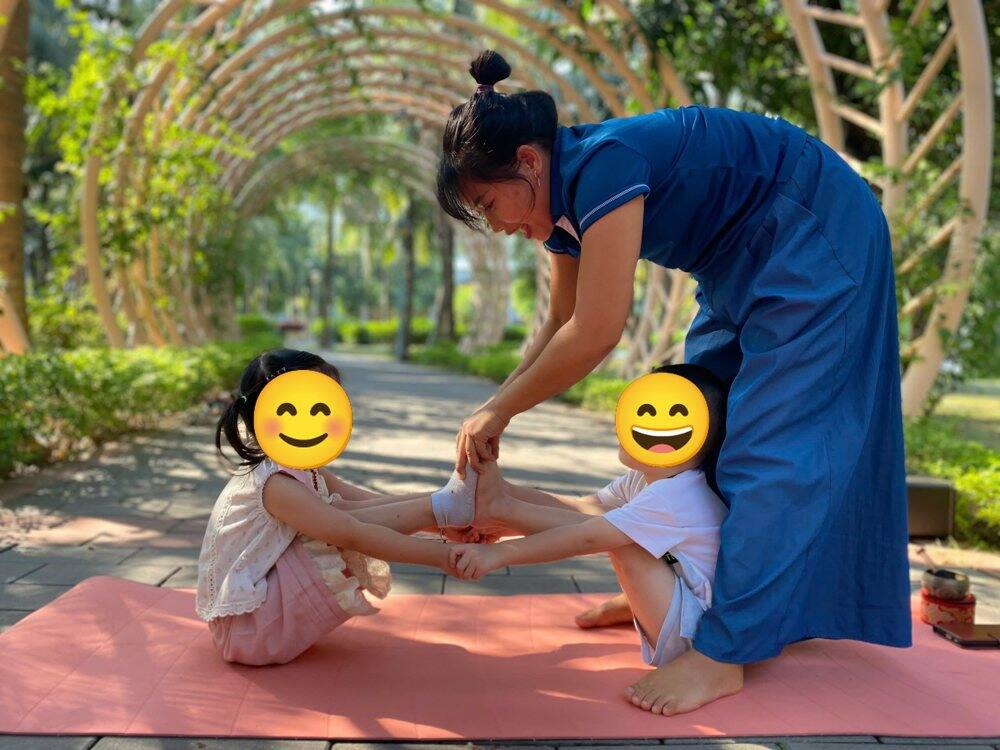
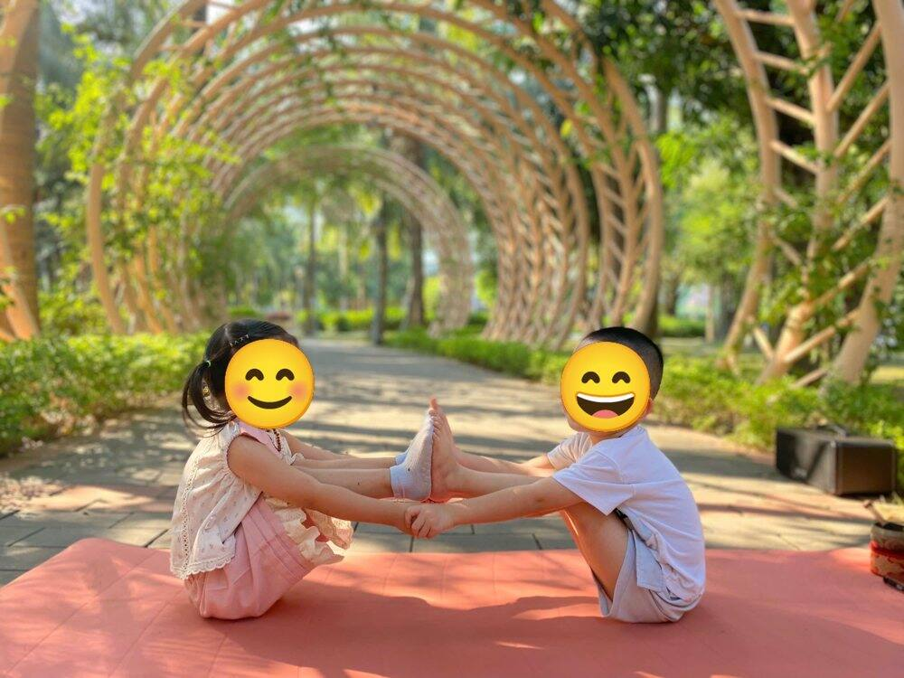
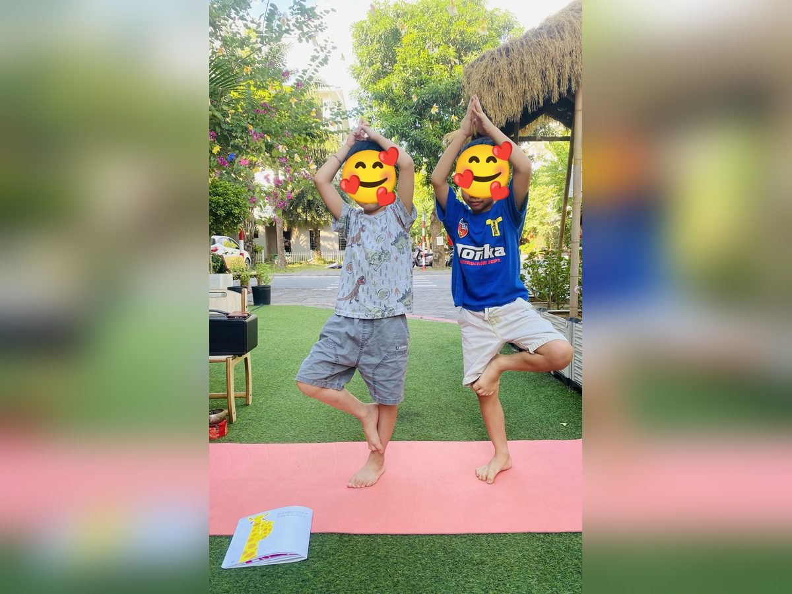

Chánh niệm cho bé
Ứng dụng yoga cân bằng phục hồi cho bé tăng động, giảm chú ý: cách hướng dẫn tập và đồng hành cùng con

Có những bạn nhỏ vào lớp như một cơn gió. Chạy một vòng quanh phòng, sờ hết chuông, bóng, thảm. Cô vừa nói câu đầu tiên, bạn đã sang góc khác.
Bố mẹ các bạn ấy thường mệt lắm. Đi đâu cũng nghe người ta nhận xét. “Con chị nghịch quá.” “Sao không dạy con ngồi yên?” Có mẹ kể với Sophia mà mắt đỏ hoe.
Bài này cô viết cho những bố mẹ, thầy cô ấy. Hai phần. Phần đầu là cách hướng dẫn một buổi yoga cho con. Phần sau là cách đồng hành cùng con mỗi ngày, ở nhà và ở lớp.
Trước hết: tăng động giảm chú ý là gì?
Tăng động giảm chú ý, tiếng Anh viết tắt là ADHD, là một khác biệt trong cách bộ não phát triển. Con khó giữ sự chú ý, khó kìm lại cái muốn làm ngay, và cơ thể thường xuyên cần chuyển động. Không phải do con hư. Cũng không phải do bố mẹ dạy dở.
Chỉ có bác sĩ hoặc chuyên gia tâm lý trẻ em mới chẩn đoán được, sau khi theo dõi con ở nhiều nơi, trong một thời gian. Rất nhiều bạn nhỏ hiếu động, khó ngồi yên mà không phải ADHD. Nếu con chỉ hơi bồn chồn, hay lơ đãng, bố mẹ đọc bài Ứng dụng yoga cân bằng phục hồi cho bé khó tập trung sẽ hợp hơn.
Cô cũng có bài riêng cho các bạn tự kỷ và các bạn hay buồn, thu mình. Mỗi bạn nhỏ một khác, nên cách dẫn cũng khác.
Và điều này cô muốn nói thật rõ: yoga không chữa được ADHD. Yoga là một hoạt động hỗ trợ nhẹ nhàng. Nó đi cùng kế hoạch của bác sĩ, của nhà trường, của gia đình. Không thay cho cái nào cả.
Vậy yoga giúp được gì? Theo những gì cô thấy ở lớp: con có chỗ cho cơ thể được chạy, được đẩy, được kéo một cách an toàn. Con tập dừng lại. Con có một hơi thở để mang theo. Và con có một khoảng thời gian được khen nhiều hơn bị nhắc.
8 điều cô luôn giữ khi dạy các bạn tăng động
1. 🧺 Chuẩn bị chỗ tập trước khi con đến
Ít đồ thôi. Cất bớt đồ chơi, tắt tivi, kéo rèm nếu ngoài cửa sổ nhiều thứ động. Mỗi bạn một tấm thảm, đặt ở một chỗ quen, buổi nào cũng thế.
Điều cô để ý: Với các bạn dễ bị cuốn theo mọi thứ xung quanh, căn phòng gọn gàng đã là một nửa buổi học. Thảm riêng giống như “nhà” của con. Lạc đi đâu, con biết đường quay về đó.
2. 🗂 Cho con nhìn thấy trước cả buổi
Dán một dải thẻ hình lên tường hoặc đặt cạnh thảm: chạy nhảy, đi như gấu, cái cây, bóng thở, nằm yên. Xong việc nào con lật thẻ đó, hoặc tự đánh dấu.
Điều cô để ý: Nhiều bạn bồn chồn vì không biết còn bao lâu nữa. Nhìn thấy “còn hai thẻ” là con yên tâm hơn hẳn. Bố mẹ có thể thử ngay thẻ lịch trình bấm được ở dưới.
3. 🏃 Vận động trước, tĩnh sau
Đừng mở đầu bằng ngồi thiền. Cho con chạy tại chỗ, nhảy ếch, bò gấu, đẩy tường vài phút. Khi người đã nóng lên, thở đã nhanh, mới chuyển sang thăng bằng, rồi thở, rồi nằm.
Điều cô để ý: Cô gọi đây là “xả nồi nước sôi”. Năng lượng có chỗ chạy ra thì phần tĩnh phía sau nhẹ nhàng hơn rất nhiều.
4. ✂️ Chia nhỏ, mỗi việc một đến hai phút
Mỗi hoạt động ngắn thôi. Một tư thế giữ 3 đến 5 hơi thở là đủ. Đổi việc trước khi con chán, chứ không đợi con chán rồi mới đổi.
Điều cô để ý: Bài dài 20 phút với các con là 10 trò ngắn nối nhau. Con thấy mình làm xong được nhiều việc. Cảm giác “mình làm được” ấy quý lắm.
5. 🗣 Lời ngắn, một bước một lần, làm mẫu trước
Thay vì “Các con đứng lên, chân phải co lên đặt vào đùi trái, tay chắp lại, nhìn thẳng”, cô nói từng câu: “Đứng lên.” Chờ. “Co một chân.” Chờ. “Tay chắp lại.” Và cô làm trước cho con nhìn.
Điều cô để ý: Cô hạ giọng, chậm lại, ngồi ngang tầm mắt con. Gọi tên con trước rồi mới nói. Mắt con nhìn cô rồi mới đưa lời dặn.
6. 🌟 Khen ngay, khen cụ thể
“Con đứng im được đến hết đèn đỏ rồi đấy.” “Con thở ra chậm quá, cô nghe rõ cả tiếng gió.” Khen đúng việc con vừa làm, ngay lúc đó, không đợi cuối buổi.
Điều cô để ý: Các con tăng động hay nghe “đừng”, “không được”, “sao con lại thế” suốt cả ngày. Ở giờ yoga, cô muốn con được nghe nhiều câu “con làm được rồi”.
7. 🔔 Giao cho con một việc
Cho con làm người gõ chuông kết thúc. Người bật tắt nhạc. Người cầm thẻ đèn giao thông. Người đếm hơi thở cho cả lớp.
Điều cô để ý: Có việc trong tay, nhiều bạn đỡ đi lang thang hẳn. Con thấy mình được tin. Và để gõ chuông đúng lúc, con phải chú ý mà không ai phải nhắc.
8. 🤲 Cho phép con cựa quậy một chút
Một quả bóng gai nhỏ để bóp tay trong lúc nằm. Cho con ngồi trên quả bóng lớn thay vì trên thảm. Cho con nằm sấp nếu nằm ngửa khó quá. Mục tiêu là con ở lại với buổi tập, không phải con bất động.
Điều cô để ý: Cô không nhắc mãi “nằm im”. Con mở mắt, cựa chân, cô kệ. Nằm cạnh, thở chậm. Vài buổi sau con tự nằm được lâu hơn.
🗂 Thẻ lịch trình: con tự đánh dấu
Con nhìn trước cả buổi sẽ có gì. Xong việc nào, con tự chạm vào thẻ đó.
6 hoạt động các con hay thích
Ảnh thật từ các lớp của cô, khuôn mặt các bé được che để bảo vệ các con.
🚦 Đèn giao thông
Đèn xanh chạy tại chỗ, đèn vàng bò chậm như rùa, đèn đỏ đứng im làm cái cây. Người lớn hô màu, đổi bất ngờ. Bạn nào thích thì lần sau cho con làm người hô.
Điều cô để ý: Trò này tập đúng cái khó nhất với các con: đang chạy mà dừng lại được. Nó vui, nên con chịu chơi đi chơi lại rất nhiều lần.
🚦 Chơi thử: Đèn giao thông
Bấm “Bắt đầu”. Đèn tự đổi màu bất ngờ. Bố mẹ đọc to, con làm theo. Mỗi lượt khoảng 1 phút.
🐻 Đi như con vật: gấu bò, ếch nhảy, cua bò ngang

Gấu bò bằng hai tay hai chân, mông cao. Ếch ngồi xổm rồi bật lên. Cua chống tay ra sau, bò ngang. Mỗi con vật đi từ đầu thảm đến cuối thảm, hai, ba lượt.
Điều cô để ý: Những động tác chống tay, đẩy, mang sức nặng cơ thể giúp con cảm nhận rõ tay chân mình đang ở đâu. Sau mấy lượt bò gấu, nhiều bạn chậm lại hẳn. Muốn thêm ý tưởng, xem bài 10 tư thế động vật.
⛰️ Ngọn núi đẩy tường và tập đôi

Hai tay chống vào tường, đẩy thật mạnh như muốn đẩy bức tường đi, đếm đến năm rồi thả. Hoặc hai bạn ngồi đối diện, chạm chân, nắm tay kéo qua kéo lại như chèo thuyền.
Điều cô để ý: Tập đôi cần nhìn bạn, chờ bạn, đi cùng nhịp với bạn. Con tập chú ý vào người khác mà không thấy đó là bài học. Xem thêm Yoga đôi.
🌳 Cái cây, mắt nhìn một điểm

Đứng một chân, bàn chân kia đặt vào bắp chân hoặc đùi trong, không đặt lên gối. Chọn một chấm nhỏ trên tường và nhìn nó thôi. Hai bạn đứng cạnh nhau, nắm tay cũng được.
Điều cô để ý: Con lắc, chạm chân xuống, lại nhấc lên. Không sao cả. Mỗi lần tự đứng lại được là một lần con kéo sự chú ý về.
🖐 Thở năm ngón tay
Xòe một bàn tay. Ngón trỏ tay kia đi dọc theo các ngón: đi lên một ngón là hít vào, đi xuống là thở ra. Năm ngón là năm hơi thở. Có quả bóng thở thì dùng bóng.
Điều cô để ý: Con có một thứ để nhìn, để chạm, để đếm. Hơi thở chậm lại mà con không phải cố. Ra khỏi lớp, con vẫn mang theo được bàn tay. Xem thêm Hơi thở bong bóng.
🌙 Nằm yên với một “người bạn” trên bụng

Đặt một con gấu bông lên bụng con. Hít vào, gấu nhô lên. Thở ra, gấu hạ xuống. Con ru gấu ngủ. Một đến ba phút thôi, rồi cô xoa nhẹ lưng hoặc bàn chân con.
Điều cô để ý: Có việc để làm (ru gấu) thì nằm yên dễ hơn nhiều. Xem Yoga với gấu bông và Massage cuối buổi.
Video: chơi Đèn giao thông cùng cô
Bố mẹ bật video, cả nhà đứng lên thảm. Một phút rưỡi: chạy, bò, đứng im, rồi thở với quả bóng vàng và nằm nghỉ. Làm trước giờ học bài hoặc sau khi đi học về đều hợp.
Một buổi mẫu 20 phút
| Thời gian | Hoạt động | Cô làm gì |
|---|---|---|
| 2 phút | Chào nhau, xem thẻ lịch trình | Chỉ từng thẻ, nói ngắn: “Hôm nay mình có 5 việc.” |
| 4 phút | Đèn giao thông | Đổi màu bất ngờ, khen ngay bạn nào dừng được. |
| 4 phút | Gấu bò, ếch nhảy, đẩy tường | Làm mẫu trước, đi cùng con. |
| 3 phút | Cái cây, tập đôi | Cho con chọn một điểm để nhìn. Ngã thì cười, đứng lại. |
| 2 phút | Thở năm ngón tay | Thở cùng con, giọng nhỏ dần. |
| 3 phút | Nằm ru gấu bông | Không nhắc “nằm im”. Nằm cạnh, xoa nhẹ bàn chân. |
| 2 phút | Ngồi dậy, kể một điều | “Hôm nay con thích trò nào nhất?” Gõ chuông kết thúc. |
Lúc mới bắt đầu, có thể chỉ 10 phút. Có hôm con chỉ làm được hai trò rồi chạy đi. Cô vẫn tính là một buổi. Lần sau con quay lại, thế là được.
Không ai một mình giúp được con
👨👩👧 Với cha mẹ ở nhà
Tập cùng con, đừng chỉ đứng xem. Trẻ con học bằng mắt. Bố bò gấu thì con bò gấu. Mẹ thở chậm thì con thở chậm theo. Mười phút cả nhà cùng chơi quý hơn một giờ con tập một mình.
Giữ hơi thở của chính mình. Khi con bùng nổ, ném đồ, la hét, người lớn rất dễ bùng theo. Cô biết, khó lắm. Nhưng một cơ thể đang hoảng không học được gì. Lúc ấy chỉ cần giữ con an toàn, hạ giọng, thở chậm bên cạnh. Dạy thì để sau, khi cả hai đã dịu. Bài Ứng dụng yoga cân bằng phục hồi cho bé hay cáu giận, lo lắng có thêm nhiều cách.
Nhịp sống đều đặn. Ngủ đủ, ngủ cùng giờ. Bữa ăn đúng bữa, ít đồ ngọt và nước ngọt. Bớt màn hình, nhất là buổi tối. Mỗi ngày được chạy nhảy ngoài trời. Yoga chỉ là một phần trong cả một lối sống cân bằng như thế, cho cơ thể, cảm xúc, suy nghĩ, hơi thở và tinh thần của con. Bài Ứng dụng yoga cân bằng phục hồi cho bé ngủ ngon có gợi ý cho giờ đi ngủ.
Nhìn thấy điều con làm được. Mỗi tối, thử kể với con một điều tốt con đã làm trong ngày. Rất nhỏ thôi. “Hôm nay con tự cất giày.” Con nghe nhận xét đủ nhiều rồi.
Chăm cả chính mình. Nuôi một bạn nhỏ tăng động là một chặng đường dài. Bố mẹ cũng cần ngủ, cần thở, cần một người để kể. Bố mẹ dịu được thì nhà dịu theo.
👩🏫 Với cô giáo ở lớp
- Chỗ ngồi gần cô, xa cửa sổ, xa cửa ra vào.
- Một tín hiệu riêng giữa cô và con: chạm nhẹ vai, giơ hai ngón tay. Không cần gọi tên trước cả lớp.
- Những khoảng vận động một phút xen giữa các tiết: 5 lần bật nhảy, đứng cái cây, đẩy tường. Cả lớp cùng được lợi.
- Giao việc: phát vở, xóa bảng, mang đồ. Con được đứng dậy một cách đàng hoàng.
- Báo cho bố mẹ cả điều tốt, không chỉ báo khi con gây chuyện.
- Dùng chung ngôn ngữ với gia đình: nếu ở nhà con quen “đèn đỏ” hay “thở năm ngón”, ở lớp cũng nói như vậy.
🩺 Phối hợp với bác sĩ và chuyên gia
Nếu bố mẹ hay thầy cô thấy con khó tập trung, khó kìm chế đến mức ảnh hưởng nhiều tới việc học, tới việc chơi với bạn, kéo dài nhiều tháng và ở nhiều nơi, hãy đưa con đi khám ở chuyên khoa nhi, tâm lý hoặc tâm thần nhi. Càng sớm càng tốt.
Khi con đã có kế hoạch điều trị hay can thiệp, cô dạy yoga nên biết để đi cùng một hướng. Bố mẹ cứ kể với bác sĩ là con đang tập yoga, tập những gì. Và không tự ý thay đổi hay bỏ thuốc vì thấy con tập yoga tiến bộ. Việc ấy để bác sĩ quyết định.
Khoa học nói gì?
Các nghiên cứu về yoga cho trẻ ADHD vẫn còn nhỏ, nhưng có những kết quả đáng chú ý.
Năm 2004, Peter Jensen và Dianna Kenny (Đại học Sydney, Úc) cho một nhóm bé trai đã được chẩn đoán ADHD, đang dùng thuốc ổn định, tập yoga mỗi tuần một buổi trong 20 tuần, đăng trên Journal of Attention Disorders. Theo đánh giá của bố mẹ, nhóm tập có cải thiện ở một số biểu hiện như bồn chồn, dễ xúc động. Nghiên cứu nhỏ, tác giả cũng nói cần thêm nghiên cứu lớn hơn.
Năm 2006, nhóm của Johann Haffner (Đức) so sánh yoga với các bài vận động thông thường ở trẻ ADHD. Trên các bài kiểm tra chú ý, nhóm tập yoga tiến bộ rõ hơn. Năm 2017, Chou và Huang (Đài Loan) công bố trên PeerJ: sau 8 tuần tập yoga, trẻ ADHD làm bài kiểm tra chú ý duy trì và phân biệt tốt hơn nhóm không tập.
Về vận động nói chung, năm 2013 Matthew Pontifex và Charles Hillman (Đại học Illinois) đăng trên The Journal of Pediatrics: chỉ một lần đi bộ nhanh 20 phút trước khi làm bài đã giúp trẻ ADHD chú ý và làm bài đọc, bài toán tốt hơn. Đó cũng là lý do cô luôn cho con vận động trước.
Cũng phải nói thật: một tổng quan Cochrane năm 2010 về thiền cho trẻ ADHD kết luận chưa đủ bằng chứng để khẳng định hiệu quả. Nên Sophia xem yoga là một người bạn đồng hành vui vẻ, an toàn, không phải phương pháp điều trị.
Trong cuốn Taking Charge of ADHD, nhà tâm lý học Russell Barkley có một ý cô rất nhớ: trẻ ADHD thường không phải không biết phải làm gì. Con biết. Cái khó là làm được điều mình biết, đúng lúc cần làm. Vì vậy người lớn giúp con ngay tại chỗ, ngay lúc ấy, bằng tín hiệu, bằng thẻ hình, bằng một lời khen kịp thời. Giảng thật dài sau đó thì ít tác dụng.
Vài điều cô hay để ý
- Không dùng yoga để phạt. “Ra kia ngồi thiền đi” làm con ghét hơi thở. Cô mời, không bắt.
- Thở chậm, không nín thở. Với trẻ nhỏ cô không cho giữ hơi, không tập các kiểu thở mạnh.
- An toàn khi con hưng phấn. Dọn đồ cứng, đồ sắc quanh thảm. Các trò nhảy chỉ làm trên thảm, không leo trèo. Tư thế đảo ngược, lộn người thì để khi con đã bình tĩnh và có người lớn đỡ.
- Dừng khi con quá tải. Con khóc, la, bỏ chạy thì dừng buổi tập. Ôm con nếu con cho phép, hoặc ngồi gần, thở chậm. Ngày mai lại thử.
- So với chính con hôm qua. Không so với bạn khác. Hôm nay đứng cái cây được 3 hơi thở, hôm qua được 1, đó là tiến bộ.
🌟 Điều các con mang về
Yoga có tám nhánh, tư thế chỉ là một. Với các bạn tăng động, cô hay nghĩ đến Pratyahara, thu các giác quan từ bên ngoài vào bên trong, và Dharana, giữ sự chú ý ở một chỗ. Ở tuổi các con, nó chỉ là những khoảnh khắc rất ngắn: dừng lại khi đèn đỏ, nghe một hơi thở ra, nhìn một chấm nhỏ trên tường.
Ngắn thôi. Nhưng con được sống trong những khoảnh khắc ấy mỗi ngày. Dần dần con biết đường về.
Có những ngày con chạy suốt cả buổi. Có những ngày con nằm yên được hai phút, và cô thấy mắt mình cay. Không cần con thành một em bé khác. Chỉ cần con biết mình được thương, đúng như con đang là.
🌿 Thầy cô muốn dạy yoga cho các bạn nhỏ đặc biệt?
Cách sắp xếp một buổi từ ồn đến yên, chọn trò chơi theo tuổi, giữ giọng nói và nhịp thở của chính mình khi lớp “nổi sóng”… cô hướng dẫn kỹ trong khóa Đào tạo Huấn luyện viên Yoga trẻ em. Bố mẹ muốn hỏi thêm về con, cứ nhắn cô.